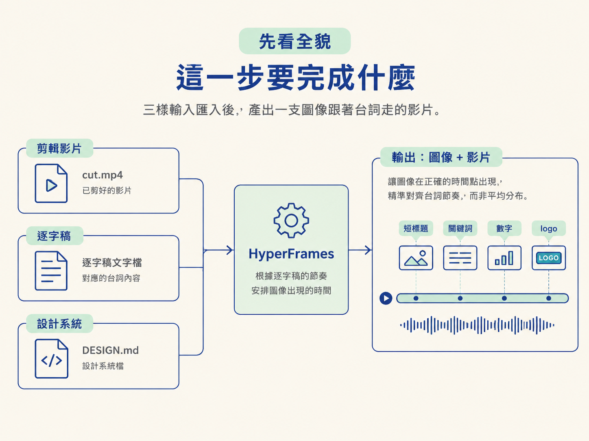
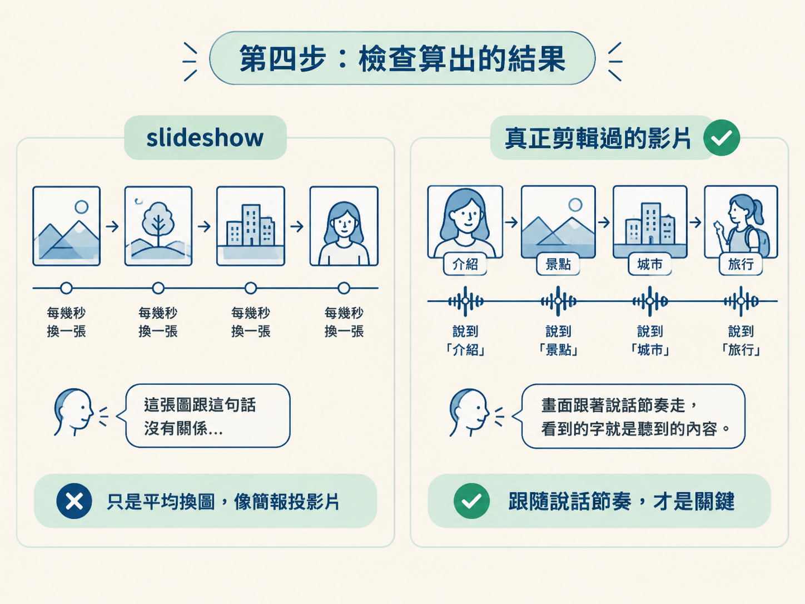

這一課的目標，是把已經剪好的影片、逐字稿和設計系統接在一起，產出一支「圖像跟著台詞走」的影片。講到某個工具時，它的 logo 才滑進畫面；講到某個數字時，數字才放大出現。圖像不再只是平均散落在時間軸上的裝飾，而是跟著說話的節奏出現。
在整條 Level 3 流程裡，上一課已經把 composition 的入場券準備好了：一份確定性的 HTML，才能穩定地算成影片。現在你手上應該有三樣東西：剪好的 cut.mp4、它的逐字稿，以及設計系統檔 DESIGN.md。這一課要補上的，就是「圖像應該在什麼時間出現」這個缺口。

開始前，請先確認你已經完成前一個節點，手上有剪好的影片與逐字稿，也有 DESIGN.md。composition 的確定性規則是上一課的地基，這裡不重講。
做完這一課，你應該能下出一段「Animate the cut」指令，讓 HyperFrames 依照逐字稿安排動態圖像的時間，套用 DESIGN.md 的顏色、字體與形狀，並輸出一支和原始 cut 一樣長的 1920×1080 MP4。
在真正算圖前，還會先用一頁 HTML storyboard 把兩段版面與「一次一張卡片」的節奏定下來。這就像先畫分鏡再開拍：幾分鐘內就能看出方向對不對，不必每次改一個位置都等待完整算圖。
先讓 agent 產出一頁 HTML storyboard。這一步不需要算圖，成本很低，卻能讓你在正式渲染前先看清楚「這支影片會長什麼樣」。Storyboard 要呈現兩段式的畫面計畫：
| 段落 | 畫面安排 |
|---|---|
| 第一部分 | 影片維持全畫面（full bleed），下方顯示字幕，右側放幾張透明度約 80% 的示範卡片。 |
| 第二部分 | 影片收成右下角的直式圓角矩形，中央舞台先放佔位方塊，之後再補上動態圖像。 |
字體與顏色一律從你的設計系統取得；這裡使用的是 RoboLabs 的規則。這樣一來，你只要修改 HTML，就能在 storyboard 上調整版面，而不必每次都等待一趟完整算圖。
影片從全畫面縮成右下角小卡片的轉換節奏，也能先在這一頁確認。若 storyboard 看起來就不對，正式動畫通常只會把問題放大，不會自動替你修好。
第一版 storyboard 很容易誤解你的意思，例如一次把好幾張卡片塞在同一個畫面裡。這時要直接寫清楚：每一個拍點只讓一張卡片動。
每張卡片都遵循固定的生命週期：先進場，在你說出對應台詞時停留，說完後退場，接著下一張才進來。這樣，畫面上的圖像就會和台詞一對一對上，而不是像投影片一樣，同時堆滿許多訊息。
樣式條件也要一併講明。卡片要有更明顯的「液態玻璃感」，並放上相關工具的 logo；卡片上的文字則直接重複你正在說的話，一個字都不要改，再切成大約二到六個字的短句。當耳朵聽到的內容和眼睛看到的文字一致，觀眾才不會在兩個訊息之間來回切換。
這裡還有一個實務上的小坑：agent 一開始可能抓不到 Claude Code 的 logo。遇到這種情況，不必重寫整段動畫；直接把 logo 檔案在你電腦上的路徑提供給它即可。放在網路上的品牌圖可能抓不到，本機路徑通常是最快的解法。
版面與節奏都確認後，再下真正的動畫指令。下面這段提示是建立好 DESIGN.md 後使用的版本；直接照抄，再把影片路徑換成自己的即可。
now animate my cut video using the design system in DESIGN.md.
- the cut video is C:/path/to/cut.mp4, and its transcript is next to it
- build it with HyperFrames, a free open-source tool that turns a web page into an mp4
(https://github.com/heygen-com/hyperframes). read its guide first
- keep me on screen the whole time - sometimes full screen, sometimes in a panel on the
right with the graphics on the left
- add motion graphics that match what i'm saying: short titles, key words, numbers, simple
diagrams, and the real logo of any tool i name
- time each graphic to the transcript so it appears as i say the words
- use only the colours, fonts and shapes from DESIGN.md. no generic default look
- don't touch my voice or footage, and keep the video exactly as long as the cut so it
stays in sync
- render it to mp4 at 1920x1080, then check frames from the start, middle and end and fix
anything that covers my face or runs off screen
make it feel like a real edited youtube video, not a slideshow.這段指令看起來很長，但每一行都在防止一種常見的失敗。可以把它當成一張出發前的檢查單：人像要留在畫面裡、圖像要跟台詞對齊、樣式要遵守設計系統，最後還要檢查算出的畫面是否安全。
| 指令行 | 它在防什麼 |
|---|---|
| keep me on screen the whole time… | 規定人像的兩種處理方式：有時維持全畫面，有時縮到右側面板，讓圖像放在左邊。 |
| add motion graphics that match what i'm saying… | 要求圖像內容對得上台詞，並帶上被點名工具的真實 logo。 |
| time each graphic to the transcript… | 讓圖像依逐字稿安排出現時間，而不是憑感覺放在時間軸上。 |
| use only the colours, fonts and shapes from DESIGN.md. | 禁止使用通用的預設外觀，所有樣式都必須回到設計系統。 |
| don't touch my voice or footage… | 保留原始聲音與畫面，並讓影片長度和 cut 完全一致，避免失去同步。 |
| render it to mp4 at 1920x1080, then check frames… | 固定輸出 1080p，並在算完後從開頭、中段和結尾抽格檢查，修掉遮住臉部或跑出畫面的元素。 |
指令跑完後，你應該拿到一段「圖像會跟著台詞走」的影片：講到某個關鍵詞，對應的短標題或數字才出現；點名某個工具時，它的 logo 才亮起。影片的長度與聲音維持原樣，只有畫面上多了一層和逐字稿對齊的動態圖像。
檢查時，不要只問自己「動畫夠不夠多」，而要問「它像不像一支真正剪輯過的 YouTube 影片」。提示最後的 not a slideshow 指的就是這件事：如果圖像只是每隔幾秒平均換一張，卻沒有跟著說話的節奏進退場，那看起來仍然是簡報，而不是影片。

下一步，打開 HyperFrames Studio 的時間軸，把卡片與字幕實際預覽一遍。確認每一張卡片都在對的時間出現，並檢查任何元素有沒有遮住人臉或跑出畫面。
要讓動態圖像對齊逐字稿，先把版面與節奏定下來，再下動畫指令。用一頁 storyboard 定出兩段版面：第一段影片全畫面、下方字幕、右側示範卡片約 80% 透明；第二段影片收成右下角直式圓角卡片、左側放圖像。卡片節奏規定成「每個拍點只動一張」：進場、撐住那句台詞、退場，下一張才來；卡片文字重複你正在說的話，切成二到六字的短句。最後用「Animate the cut」指令，要求圖像依逐字稿時間出現、只用 DESIGN.md 的樣式、不動聲音畫面，並輸出 1920×1080。
當你在 HyperFrames Studio 的時間軸上預覽時，應該看見圖像和字幕按照台詞依序出現，影片長度與原始 cut 一致，畫面也沒有遮住人臉或超出邊界。這一課先把版面、節奏和生成指令接起來；至於如何在時間軸上做更細的微調，下一節會再處理。